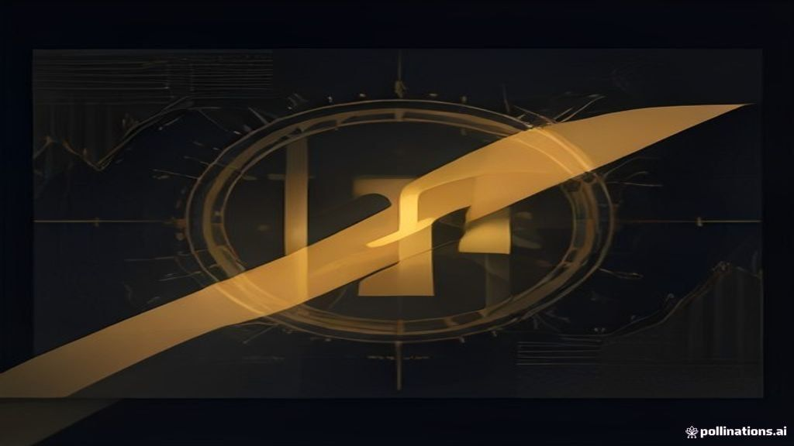
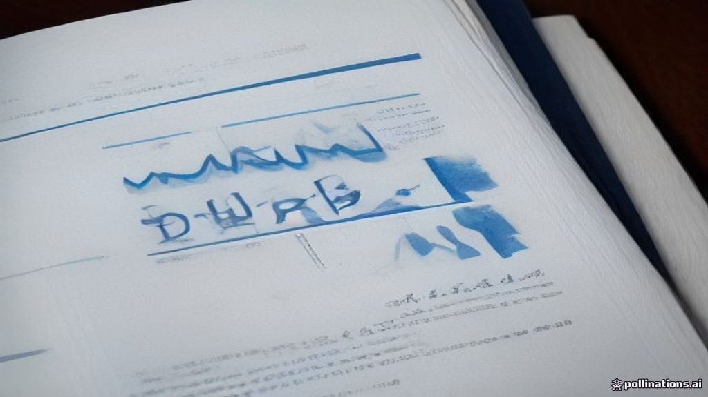
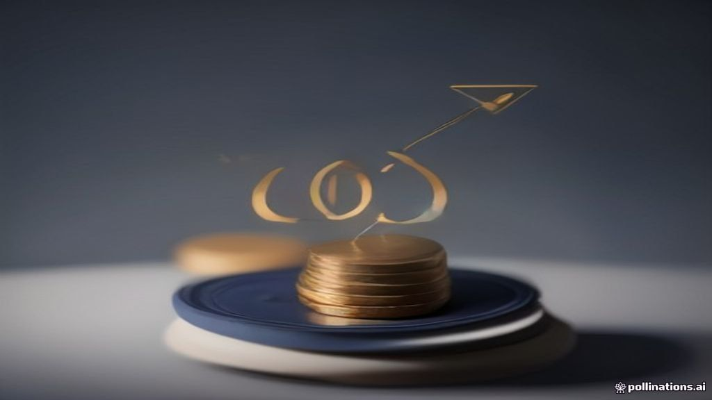

Latest insights
Personal-finance explainers, market briefs, F&O positioning and business stories — all in one place.
India's Green Hydrogen Push: New Boost for Clean Energy Production
India is actively promoting 'Green Hydrogen,' a clean fuel made using renewable energy. The government recently announced new steps to boost its production an.
IPO Report Card: 30 to 60 Days After Listing — October 2026
Out of 44 companies that listed between 30 and 60 days ago, 20 are currently trading above their initial public offer (IPO) price. 24 companies are currently .
Nifty's Oversold Signal: Navigating RBI Policy Impact
The Nifty 50 index is showing technical signs of being oversold, suggesting a potential for a near-term rebound. The upcoming Reserve Bank of India (RBI) Mone.
Resolving NPS Issues: A Guide to PFRDA Pension Sahayak
The PFRDA Pension Sahayak portal offers a streamlined online platform for National Pension System (NPS) and Atal Pension Yojana (APY) subscribers to raise and.

Pre-Market Brief — 05 October 2026
Global markets closed mostly positive, with Asian indices also showing strength this morning. GIFT Nifty indicates a slightly positive to flat opening for the.
Market Anticipates Strong Earnings Season: What It Means
The Indian stock market is showing positive sentiment ahead of the upcoming corporate earnings season, buoyed by strong early reports like Micron Technology's.
Upcoming IPOs, Explained Simply — October 2026
This week, you can learn about IPOs from Vishal Nirmiti Limited, Nityas Gems and Jewellery Limited, Eventions Limited, SMC Global Securities Limited, and R.K.
Long-Term Savings: Your Anchor for Financial Security in Old Age
India's Chief Economic Advisor (CEA) has highlighted the critical need for individuals to prioritise long-term pension investments over short-term trading. Pe.
NPS: Your Path to a Tax-Efficient Retirement in India
The National Pension System (NPS) is a government-regulated, long-term retirement savings scheme for Indian citizens. It offers significant tax benefits under.
IT Earnings Soar on AI, But Rising Bond Yields Pose Key Risk
Jefferies' 'Greed and Fear Report' projects a significant 65% earnings growth for the IT sector driven by the Artificial Intelligence (AI) boom. This optimist.
Your Loan EMIs and Savings: What the RBI's Upcoming Meeting Could Mean
India's central bank, the RBI, is holding a key meeting from October 5-7, 2026. They will decide on the 'repo rate,' which influences all other interest rates.
RBI MPC Rate Hike: Investor Strategy for Equity & Debt
The Reserve Bank of India's Monetary Policy Committee (MPC) is widely expected to hike the repo rate by 25 basis points next week. This anticipated move is pr.
Capital Gains Tax Maths Differs Across Gold, Silver, Debt, & Equity ETFs
The capital gains tax on ETFs varies significantly based on the underlying asset class and holding period. Equity ETFs enjoy preferential tax treatment for lo.
NVIDIA: Powering Towards ₹8 Lakh Crore Quarters
NVIDIA reported Q2 FY27 revenue of $96.2 billion (approximately ₹8 lakh crores), signifying over 100% year-over-year growth. Data Center revenue continues to .
Your Small Savings Scheme Interest Rates for October-December 2026 are Out!
The government has kept interest rates for most small savings schemes unchanged for October-December 2026. This is the tenth consecutive quarter with stable r.
SEBI Data: Does Frequent Trading Actually Boost Returns?
SEBI's recent studies for FY25 and FY26 reveal that a vast majority of individual traders in the equity derivatives segment incur losses. The studies, based o.
ITR-4 Deductions: Documents for TY 2026-27 Tax Benefits
ITR-4 is filed by individuals, HUFs, and firms opting for the Presumptive Taxation Scheme under Sections 44AD, 44ADA, and 44AE. This scheme simplifies tax fil.
Market Wrap — 02 October 2026
Indian equity benchmarks, Nifty 50 and Bank Nifty, closed lower today, marking a broad-based decline across the market. Aggressive selling by Foreign Institut.

Pre-Market Brief — 02 October 2026
Global markets presented a mixed picture overnight, with US and European indices showing minor gains, while Asian markets largely retreated. GIFT Nifty is sig.
Understanding NVIDIA's Q4 2024 Results and Future Outlook
NVIDIA reported exceptional Q4 2024 results, with revenue reaching $22.1 billion, a 265% year-on-year increase. The Data Center segment was the primary growth.
India F&O Pulse — 02 Oct 2026: what the day's options & futures positioning is whispering
End-of-day reading of India's F&O open interest, PCR, max pain and FII positioning — explained simply.
Your Options Trades Just Got a Closer Look: Understanding Derivatives Risk
Options are financial contracts giving you the right, but not the obligation, to buy or sell an asset at a set price. India's market regulator, SEBI, is conce.
SEBI Study: More Derivative Trades Don't Mean More Profit
SEBI recently published studies for FY25 and FY26, analysing individual traders in the equity derivatives segment. The findings indicated that a significant m.
NPS Swasthya: Health Cover & Deductibles Explained
The PFRDA is developing 'NPS Swasthya,' a new pension product combining retirement savings with health insurance. This scheme aims to provide health cover ran.
Market Wrap — 01 October 2026
Indian equities witnessed a broad-based decline today, with benchmark indices Nifty 50 and Bank Nifty closing in the red. Global cues, particularly rising US .
Pre-Market Brief — 01 October 2026
Global Tone:** Mixed to cautious, with US markets split, Europe down, and Asian markets showing a mixed trend. **GIFT Nifty Bias:** Signalling a negative open.
Welspun Corp: What Could Drive the Stock Over the Next 5 Years
Welspun Corp has seen a significant stock rally of over 221% in the past year, driven by strong growth prospects. A record order book of ₹42,100 crore provide.
India F&O Pulse — 01 Oct 2026: what the day's options & futures positioning is whispering
End-of-day reading of India's F&O open interest, PCR, max pain and FII positioning — explained simply.
Your Money, Your Choices: RBI Governor Warns on Digital Lending
RBI Governor Shaktikanta Das recently spoke about the fast growth of digital loans and the need for caution. He stressed that both lenders and borrowers must .
How to Calculate Your Term Insurance Cover: A Practical Guide
Relying solely on a 10-15 times annual income rule for term insurance cover is often insufficient for comprehensive financial planning. A robust calculation m.
Life-Cycle Funds vs. DIY Portfolio: Automate or Manage Investing?
Life-cycle mutual funds automatically adjust your asset allocation, becoming more conservative as your goal approaches. A Do-It-Yourself (DIY) portfolio requi.
Market Wrap — 30 September 2026
The Indian benchmark Nifty 50 ended lower for the third consecutive session, while the Bank Nifty managed to close in the green, indicating a mixed day for th.
Pre-Market Brief — 30 September 2026
Global markets show a mixed picture, with US indices closing lower and European markets facing monthly declines, while Asian peers largely gained. GIFT Nifty .
2026 IPOs: Why Earnings Execution Trumps Listing Gains
Many investors who sold shares of top-performing 2026 IPOs on listing day actually booked losses. This trend highlights that short-term market sentiment often.
India F&O Pulse — 30 Sep 2026: what the day's options & futures positioning is whispering
End-of-day reading of India's F&O open interest, PCR, max pain and FII positioning — explained simply.
Your Roads and Power Lines Just Got a New Way to Fund Themselves: Understanding InvITs
Infrastructure Investment Trusts (InvITs) are like mutual funds for big projects like roads and power lines. They allow ordinary people and large investors to.
Talent Crunch Hinders SEBI's PMS Global Investment Push
SEBI is actively working on regulatory changes to enable Portfolio Management Services (PMS) to offer more international investment opportunities. Indian inve.
Market Wrap — 29 September 2026
Indian benchmark indices, Nifty 50 and Bank Nifty, closed lower today, extending the negative sentiment from a volatile monthly expiry. Persistent foreign ins.
Pre-Market Brief — 29 September 2026
Global markets ended mixed, with US indices closing lower and Asian markets showing a cautious tone this morning. GIFT Nifty indicates a negative opening bias.
Four blue-chip stocks in India with expanding margins
Expanding operating and net profit margins indicate a company's improved efficiency and profitability. Tata Steel has shown significant improvement in both op.
India F&O Pulse — 29 Sep 2026: what the day's options & futures positioning is whispering
End-of-day reading of India's F&O open interest, PCR, max pain and FII positioning — explained simply.
Your GST Just Got Simpler: Big Changes Expected from the Next Council Meeting
The 57th GST Council meeting, now on October 7, 2026, will focus on making tax rules easier for businesses. Key discussions include allowing businesses to cla.
IPO Report Card: 30 to 60 Days After Listing — September 2026
This report covers 40 companies that listed on the stock exchange between 31 and 59 days ago. 23 companies (about 57.5%) are currently trading above their ini.
SEBI's New Vault Rules: Enhanced Security for Gold & Silver ETFs
SEBI has introduced a comprehensive framework for vault managers storing physical gold and silver bullion underlying ETFs. These new rules mandate stricter st.
Maximising Savings: 9 Reinvestment Options for Capital Gains Tax Exemption
Selling capital assets like property, land, shares, or mutual funds can lead to capital gains tax. The Income-tax Act, 1961, offers exemptions if these gains .
Market Wrap — 28 September 2026
Indian equities witnessed a sharp decline today, with Nifty 50 falling over 1.5%. Global cues, particularly surging crude oil prices after President Trump's r.

Pre-Market Brief — 28 September 2026
Global markets show a mixed picture, with US indices closing higher but Asian markets opening mixed, indicating caution. GIFT Nifty is signalling a significan.

Upcoming IPOs, Explained Simply — September 2026
This week, several companies like A-One Steels, Moneyview, Runwal Enterprises, AceVector, German Green Steel and Power, Orient Cables, Shah Investor's Home, a.
What India's Business Activity Index Tells Us About Our Economy
India's business activity, measured by the Purchasing Managers' Index (PMI), grew faster in September 2026. Both manufacturing and services sectors showed str.